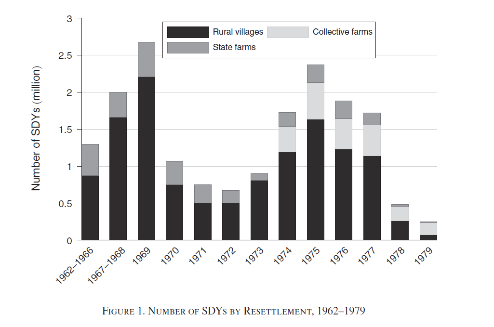
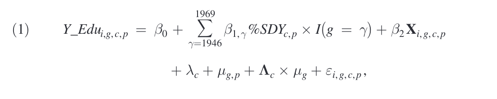
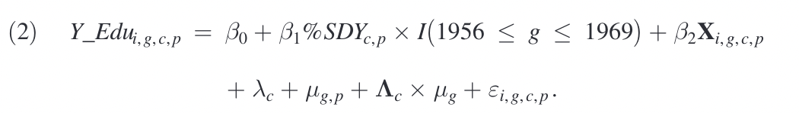
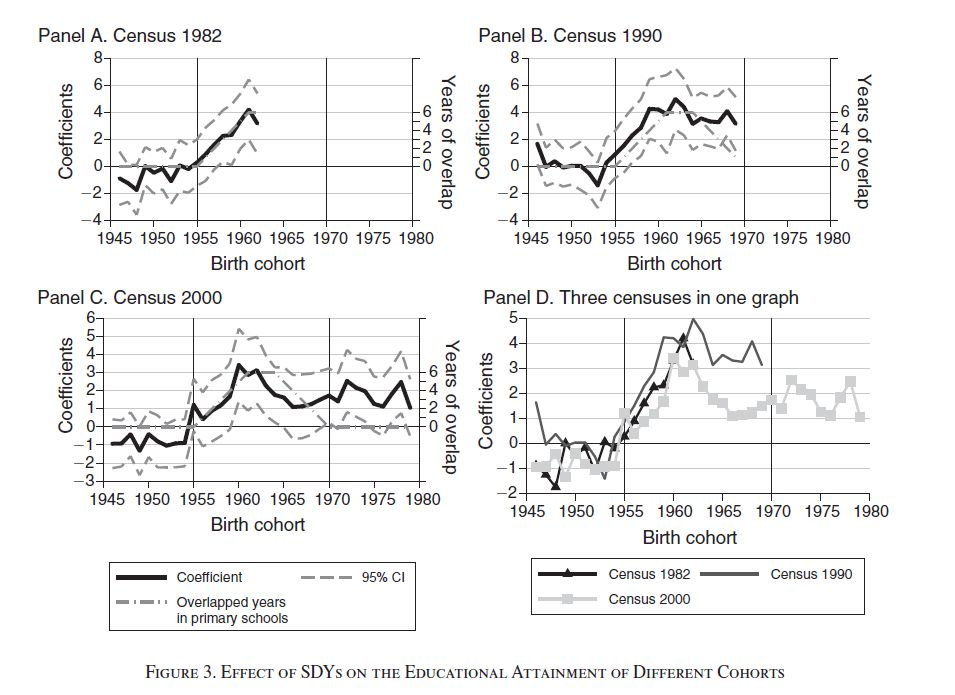
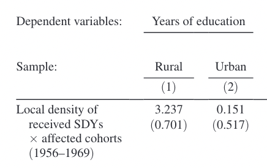
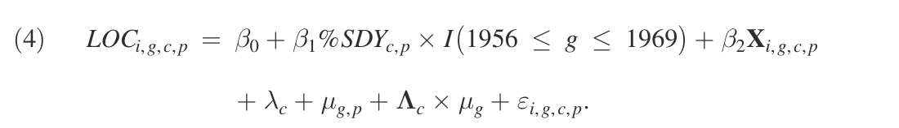

Arrival of Young Talent: The Send-Down Movement and Rural Education in China
Basic infomation about the paper
Yi Chen, Ziying Fan, Xiaomin Gu, Li-An Zhou. Arrival of Young Talent: The Send-Down Movement and Rural Education in China[J]. American Economic Review, 2020, 110 (11): 3393-3430.
2 Abstract
这篇文章构建了在文化大革命期间知青对农村儿童教育的正向效应，显示了上山下乡青年显著地提升了农村儿童的教育成就(educational achievement)。在知青离开农村时候，这层正向效应减弱，同时横向对于没有接触过上山下乡青年的儿童来说，有与知青接触的儿童在成年后倾向于选择更具技术含量的工作，在结婚之后的家庭规模会更小。
3 Introduction
3.1 What is send-down movement（上山下乡）
中国1968年发起的文化大革命，人为使得1600万青年在暂时留在了农村，他们被称为知青（SDYs）；在1967-1969年4.7百万城市青年进入农村，另一个高峰在1974年；在1980年9月终止了这项运动；大概95%知青回到了城市；这项运动属于一个准自然实验，因此对于
comment：准自然实验，意味着无系统性差异，与DID方法等统计方法一同使用可以估计出我们想要的因果效应。
识别策略(identification strategy)：不要求每个地方接收知青数量是外生的，在队列DID中的识别策略主要是平行趋势假设(paralled-trend assumption)和教育同伴趋势与处理密度无关。之后通过教育扩张与知青数相关系数保持稳定，即证明假设成立。
平行趋势假定是实证论文中使用DID的前提，处理组与控制组的目标变量在政策发生前（事前）只有满足平行趋势假设才能使用DID。在本文中，该假设很容易得到证明是成立的。
3.2 flows of SDYs
关键变量：在不同时期的不同的知青数量；
对知青流动构建推动-牵引框架（“pushing-pulling”framework）
推动因子:城市化率，城市化率是由城市年轻人主要推动的；
牵引因子：农村地区与知青原始地距离，农村地可容纳人口容量以及农村地区劳动力需求量；
3.3 What did SDYs do in rural china
知青三个主要目的地：农村（插队），集体生产队，地方农场；
知青也不仅仅在农场工作，也通过做一些非农工作，介绍一些城市所使用的技术，知识和传播价值观念，他们就如同农村和城市的“桥梁”。
图一展示了知青的人数变化情况，第一次的高峰在1967-1969年，第二次在1974年，历史背景上就是全国知识青年工作会议的召开。

3.4 Data and empircal Strategy
3.4.1 数据
知青数据
县层面的3000本地方县志，县志中记录了关于当地的事情，（大部分在1990-2000年公布）提取出与知青相关的信息（1968-1977）；同样在县志获取关于教师、学校数量，农产品产量、教育支出、文化大革命受迫害者数量等来辅助进行分析。但县志并没有在全国一个统一标准：可能会导致偏差(bias)因此通过本福特法则(Benford’s Law)进行检验同时使用不同的数据来源进行比较（包括CFPS和国家报告）；
儿童数据
利用1990中国人口普查数据（包括在每一个县层面的数据），评估农村儿童在知青影响下的教育产出回报；进一步对于知青接触根据与儿童小学教育时长是否与下乡运动时间恰好重合，再对于高等教育进行鲁棒(robust)检验；
下乡人群分组：1956-1969年出生的儿童效应组，1946-1955年出生的儿童为控制组。
3.4.2 关键变量
受教育年限为关键被解释变量：从最高受教育学历和是否完成每一个阶段的学习来刻画；完成的状态是对当时来说是关键的信息。
解释变量：知青的密度。
平均化处理：对于中途辍学来说，将其处理为该受教育阶段平均上学时间；
控制变量：控制个体效应、地区效应和时间效应，省同伴固定效应\(\mu_{g,p}\)与在知青来之前的基础教育\(\Gamma\)构成交互项。这使得跨省的不同趋势，同时还与初始状态（知青未来）的基础教育相联系。
4 Method and Effects
4.1 Empirical Strategy
识别策略
类似于Duflo(2001,AER)的做法，作者使用了基于出生队列和地区两个维度变异的队列差分(cohort DID)，主要基于（1）在上山下乡期间，各县接受了不同数量的下乡知青，受到下乡知青的影响程度不同。（2）在同一个县内，不同出生队列的儿童受到下乡知青的影响不同。

- \(Y\_Edu_{i,g,c,p}\) 在 \(p\) 省 \(c\) 县 \(g\) 组内个体i的受教育年限；\(\%SDY_{c,p}\) 为知青（SDYs）在 \(p\) 省 \(c\) 县的人群密度；\(\mathbf{X}_{i,h,c,p}\) 为个体层面控制向量，包括性别，种族等；\(\lambda_c\)为县的个体固定效应；$ u_{g,p}\(为省的群体固定效应；\)_c_g$ 为在知青到来之前的虚拟变量。
县的基础教育通过处等教育和高中毕业率来计算

给定假设：受影响的儿童群体（1956-1969），在没有上山下乡的假设下，趋势上不与知青密度相关；
年龄效应混淆世代效应：在本研究中，衡量教育产出的变量是是否完成小学教育：而基础教育(basic education)基本上不随年龄改变（一旦辍学很难回去）；因此年龄效应不是一个主要因素；
保守的假设的某些超出模型的方案：
- 对照组（1946-1955）仍然有可能受到知青影响，再回到学校学习
- 假设对在1960-1970年受教育者，在此以后仍然呆在原户籍处，但现有的研究表明对于受到最好教育的那一批人会显著流动；因此这篇研究就很可能避开讨论这一部分人；
4.2 Effect of SDYs on rural education
作者使用1982，1990和2000奶奶的人口普查数据进行估计，下图所展示的是交互项系数 \(\beta_{1,\gamma}\)，反映的是知青对农村居民受教育的动态影响。从图中可以看出的是，1956年出生队列以前，交互项(interaction term) \(\beta_{1,\gamma}\) 系数基本在 \(0\) 左右，表示上山下乡之前受到下乡知青的影响不同但没有出现异质性队列趋势，支持我们的平行趋势假定。
下图中 \(\beta_{1,\gamma}\) 从1956年这一队列开始逐渐增加，这表明从知青到达的那一刻起，随着越来越多的适龄儿童接触到下乡知青，上山下乡运动对农村教育的积极影响本质上是在不断累积的。随着上山下乡运动的结束和知青返城，这种影响虽然有所减弱，但却并没有消失。

根据建立计量模型所回归得到的$ _{1,}$系数显示：效应显著立即上升当知青到来；随着运动的结束，效应开始下降；

效果比城市同龄人更为显著，与知青接触的农村孩子至少提升0.072年（保守的估计）；与知青接触的农村孩子完成小学教育的可能性增长率为0.98%，完成中学教育的可能性增长率为1.70%；
4.3 机制（Mechanism）
良好受教育的知青对于当地教师储备(pool of teachers)的影响：他们许多人成为老师。教授(teaching)是最直接的方式来提升当地孩子受教育水平。同时大量的文献佐证文化大革命时期的教师数量的短缺，因此知青对教师的补充有重要的影响；进一步通过DID来说明知青对当地教师数量的影响：

$ %Teachers_{t,c,p}\(：表示为在p省c县t年小学，初中教师数量；\) c$ :控制固定效应；$ u{t,p}$不同省的外生时间趋势；
标准差在县层面已包括。根据数据，在1965年，每千个住户中用4.9个小学教师，0.55个初中老师；之后存在一个不对称的增长，知青对于初中高中毕业生多于小学；同时，当地老师大多数在非公办学校增长；对于知青非计划教授农村孩子命题的验证。
4.4 其他的解释（Alternative Interpretations）
对于可能的经济学解释：
- 忽略了地方所处的角色（政府、粮食产量等）
- 同时期的其他历史事件（文字下乡、文化大革命等）
- 某些机制影响知青成为农村居民
4.5 持续的影响（lasting impacts of SDYs）
对于当地居民的影响
对于长期的影响来说，通过2010年CFPS基线调查数据关于”教育与一个人成功联系“的问卷，进一步借助于控制点理论（LOC）来测量人们的价值观、态度对于不同因素。

结论：农村居民有更倾向与内控者，对教育有积极态度，更不认为自己的命运被家庭背景、社会经济地位、运气所决定；
对于继续接受教育的影响
同样对于与接触过的农村孩子来说，更有可能去接受更高层次的教育；
对于职业选择的影响
以ISCO-88为标准将职业分层。可以通过结果看到农村孩子显著相关的职业选择是教师；教师作为志愿自然会增加地方教师供给，进一步构建学生数量关系（教师/学生数量比保持稳定的前提下），结果显示是显著的正向作用（学生数量在增长）
结婚年龄和家庭大小
对于农村孩子长大后，有一个更低的幼儿出生率，同时也有一个更小的家庭，这里的经济解释是小的家庭能够增强农村居民教育投资（同之前对于当地居民的价值观、教育理念影响相互解释）；
5 Conclusions
- 与知青更多接触的农村适龄儿童得到更多的教育
- 对于女孩、儿童发展更一般的地区，获得更大的影响，知青不仅全面提升农村教育，同时减少了社会不平等；
- 同时对于当地居民来说也提升了农村的教育在知识鸿沟上进行填补；
- 对当地居民在观念上的影响：对于教育、更不倾向于家庭背景对人生成就的影响；
- 农村儿童成长后更倾向于技能型职业选择：进一步这篇研究引向农村人力资本积累因知青到来与中国经济的快速发展的提供阐述；
6 Notes
Age effects are variations linked to biological and social processes of aging specific to individuals.They include physiologic changes and accumulation of social experiences linked to aging, but unrelated to the time period or birth cohort to which an individual belongs. In epidemiological studies age effects are usually denoted by varying rates of diseases across age groups.
Period effects result from external factors that equally affect all age groups at a particular calendar time. It could arise from a range of environmental, social and economic factors e.g. war, famine, economic crisis.
Cohort effects (同辈效应) are variations resulting from the unique experience/exposure of a group of subjects (cohort) as they move across time.
LOC：Locus of control refers to the degree to which an individual feels a sense of agency in regard to his or her life. Someone with an internal locus of control will believe that the things that happen to them are greatly influenced by their own abilities, actions, or mistakes.
7 Thought
这一研究所揭示了知青上山下乡这里重大历史事件对农村教育的重要影响，但本身却不是在这项运动的目的范围之中，属于一种“意外收获”，而对于知青上山下乡的研究在不同领域都有很多研究去评估其所带来的影响，包括正面和负面的，这篇文献给予在农村教育领域的贡献做出一定的研究与探讨。同时该篇文章在运用”cohort DID+准自然实验“上给予很大的计量教育作用，为计量方法及研究选题看到了很多的扩展性的应用。
8 本篇阅读笔记参考文献/资料
Angrist J D, Pischke J S. Mostly harmless econometrics: An empiricist’s companion[M]. Princeton university press, 2009.
Stock J H, Watson M W. Introduction to econometrics[M]. Boston: Addison Wesley, 2003.
Honig, Emily, and Xiaojian Zhao. “Sent-down youth and rural economic development in Maoist China.” The China Quarterly 222 (2015): 499-521. 中文版见韩起澜、赵晓剑和罗湘衡（罗为译者），《知识青年与毛泽东时代的农村经济发展》，《毛泽东思想研究》2016年第33卷第1期22-32页.
Gong, Jie, Yi Lu, and X. Xie. (2014). “Rusticated youth: The send-down movement and beliefs.”